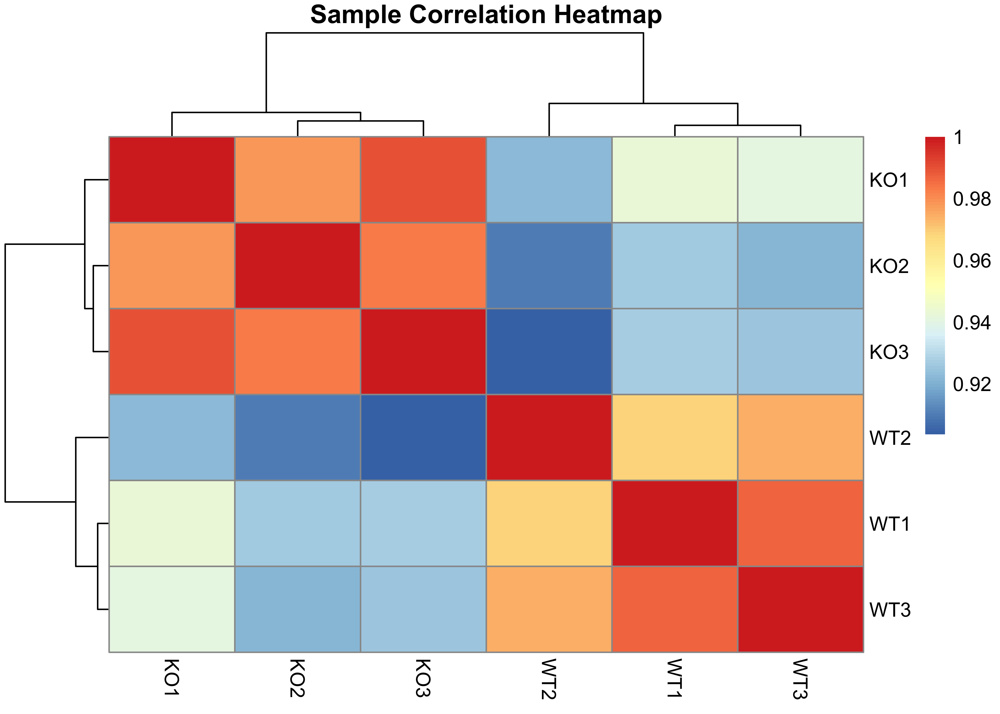

MECR-KO in vivo Report
Anton_Zhelonkin
2024-10-30
- 1 Data Preparation
- 2 Exploratory analysis
- 3 Statistical Modelling
- 4 Gene Set Enrichment Analysis
- 4.1 MSigDB Hallmark Pathways enrichment analysis
- 4.2 MSigDB C5 Gene Ontology Molecular Function Sets enrichment analysis
- 4.3 Running score plots
- 4.4 Pathway specific plots
- 4.5 MSigDB C2 Canonical Pathways (CP) gene sets enrichment analysis
- 4.6 KEGG pathways enrichment analysis
- 4.7 REACTOME Pathways enrichment analysis
- 4.8 IMMUNESIGDB Pathways enrichment analysis
- 4.9 References
1 Data Preparation
Raw counts data were filtered using edgeRs function
filterByExpr and normalized using standard TMM
(trimmed mean of M values) method, which accounts for sequencing depth,
RNA composition, and gene length, and is the standard recommended method
in edgeRs vignette. For the exploratory visualisations read
counts per million were calculated and log+1 transformed.
2 Exploratory analysis
2.1 PCA
PCA Data Preparation for Plotting: : The first two principal components (PC1 and PC2) were extracted from the PCA results and combined with metadata (group/condition) and sample names.
Variance Explained by Principal Components: The proportion of variance explained by each principal component was calculated as a percentage. This provides context for interpreting the PCA plot by quantifying how much of the total variance is captured by PC1 and PC2.
PCA Plot: The PCA plot visualizes the first two principal components, with points representing individual samples. Points were colored and shaped according to the experimental condition (i.e., group).
2.2 Scree plot - Proportion of Variance explained by PCA
The major % of variance is explained by the first component. The first PCA has obivously captured the nice delineation between the WT and KO samples.
2.3 Samples heatmap
Sample Correlation Matrix and Heatmap: A sample correlation matrix was computed using Pearson correlation, quantifying the similarity in gene expression profiles between pairs of samples based on the logCPM values. This matrix reflects how closely samples relate to each other in terms of their overall expression patterns. A heatmap of the sample correlation matrix was generated using the pheatmap() function. The heatmap displayed correlation values between samples, with annotations for experimental group and temperature shown for each sample.

## [1] "No NAs introduced during values conversion"3 Statistical Modelling
The design matrix for initial modelling has been set up using the formula:
Desing formula
DEGs ~ group
…which basically means. Variable on the left-hand side of a tilde (~) is called the “dependent variable”, while the variables on the right-hand side are called the “independent variables” and are joined by plus signs +. Variables joined by * sign, are interactions terms, i.e. we`re interested in how the intereaction between variables influences the dependant variable.
Weighted limma-voom Transformation To account for both sample quality and variability in read counts across samples, we applied the voomWithQualityWeights function from the limma package. This method incorporates sample-specific weights during normalization, ensuring that poor-quality samples have reduced influence on the differential expression analysis.
3.0.1 Volcano Plot - for trimmed reads
3.0.2 Volcano Plot - for trimmed + de-deuplicated reads
3.0.2.0.0.1 t-statistic rankins and correlation for trimmed and trimmed+deduplicated samples
Significant DE genes (p < 0.05) identified in the trimmed and trimmed+deduplicated counts data.
Further down the analysis pipeline running GSEA on the trimmed+deduplicated data introduces a lot of ties to the data (>50%), which is why for all the downstream analysis we`re sticking to trimmed, non-deduplcated data.
4 Gene Set Enrichment Analysis
Gene set enrichment analysis was performed using the
clusterProfiler package. We tested pathway enrichment
against msigdbr genesets database. * Hallmark Pathways *
ImmuneSigDB subset of C7 - Gene sets representing chemical and genetic
perturbations of the immune system generated by manual curation of
published studies in human and mouse immunology * REACTOME * GO * MF:
subset of GO - Gene sets derived from the GO Molecular Function
ontology. The ranked gene list for the GSEA was ranked based on the
moderated t-statistic.
4.1 MSigDB Hallmark Pathways enrichment analysis
4.1.1 All Hallmark pathways
4.1.2 Top 20 Hallmark Pathways
4.1.3 Running score plots
4.1.3.1 Top 5 Pathways running score plot
4.1.3.2 Top 24 running score plot

4.1.4 Pathway-specific Plots
4.1.4.1 Myc pathway

4.1.4.2 MTORC1 pathway
4.1.4.3 PI3K-AKT-MTOR pathway
4.1.5 Deduplication check
Warning: There are ties in the preranked stats (52.54% of the list). The order of those tied genes will be arbitrary, which may produce unexpected results.
4.2 MSigDB C5 Gene Ontology Molecular Function Sets enrichment analysis
4.2.1 Top 100 GO Pathways

4.2.2 Top 20 GO:MF Pathways
4.3 Running score plots
4.3.0.1 Top 24 running score plot

4.4 Pathway specific plots
4.4.0.1 Electron Transfer Activity
4.4.0.2 WNT Receptor Activity
4.5 MSigDB C2 Canonical Pathways (CP) gene sets enrichment analysis
4.5.1 All C2CP Pathways
4.5.2 Top 20 C2CP Pathways
4.5.3 Running score plots
4.5.3.1 Top 5 Pathways running score plot
4.5.3.2 Top 24 running score plot

4.6 KEGG pathways enrichment analysis
4.6.1 Top 100 KEGG Pathways

4.6.2 Top 20 KEGG Pathways
So far as we are not interested in particular disease related
pathways or cancer types, while KEGG is abandunt in those, I have tried
to manually filter pathways, that contain keywords, such as
cancer, disease,
leukemia,carcinoma, depression,
lupus, infection, and other *omas
(like melanoma, carcinoma etc.)
4.6.3 All KEGG (no disease) Pathways

4.6.4 Top 20 KEGG (no disese) Pathways
4.6.5 Running score plots
4.6.5.1 Top 5 Pathways running score plot
4.6.5.2 Top 24 running score plot

4.6.6 Pathway-specific Plots
4.6.6.1 Antigen Processing & Presentation
4.6.6.2 AG processing running score plot
4.6.6.3 TCR signaling
4.6.6.4 Citrate cycle TCA
4.6.6.5 Glycolysis
4.7 REACTOME Pathways enrichment analysis
4.7.1 All REACTOME Pathways

4.7.2 Top 20 KEGG Pathways
4.8 IMMUNESIGDB Pathways enrichment analysis
Here is the list of the enriched Hallmark Pathways.
ImmuneSigDB subset of C7
4.8.1 Top 20 IMMUNESIGDB Pathways
- Enriched plot
- Hallmark, top 20.
- Manually removed rededundant pathways:
- HALLMARK MYC TARGETS V2
- HALLMARK ADIPOGENESIS
4.9 References
## Guangchuang Yu, Qing-Yu He. ReactomePA: an R/Bioconductor package for reactome pathway analysis and visualization. Molecular BioSystems 2016, 12(2):477-479
##
## S Xu, E Hu, Y Cai, Z Xie, X Luo, L Zhan, W Tang, Q Wang, B Liu, R Wang, W Xie, T Wu, L Xie, G Yu. Using clusterProfiler to characterize multiomics data. Nature Protocols. 2024, doi:10.1038/s41596-024-01020-z
##
## T Wu, E Hu, S Xu, M Chen, P Guo, Z Dai, T Feng, L Zhou, W Tang, L Zhan, X Fu, S Liu, X Bo, and G Yu. clusterProfiler 4.0: A universal enrichment tool for interpreting omics data. The Innovation. 2021, 2(3):100141
##
## Guangchuang Yu, Li-Gen Wang, Yanyan Han and Qing-Yu He. clusterProfiler: an R package for comparing biological themes among gene clusters. OMICS: A Journal of Integrative Biology 2012, 16(5):284-287
##
## Lawrence M, Huber W, Pag\`es H, Aboyoun P, Carlson M, et al. (2013) Software for Computing and Annotating Genomic Ranges. PLoS Comput Biol 9(8): e1003118. doi:10.1371/journal.pcbi.1003118
##
## Orchestrating high-throughput genomic analysis with Bioconductor. W. Huber, V.J. Carey, R. Gentleman, ..., M. Morgan Nature Methods, 2015:12, 115.
##
## Orchestrating high-throughput genomic analysis with Bioconductor. W. Huber, V.J. Carey, R. Gentleman, ..., M. Morgan Nature Methods, 2015:12, 115.
##
## C. Sievert. Interactive Web-Based Data Visualization with R, plotly, and shiny. Chapman and Hall/CRC Florida, 2020.
##
## Garrett Grolemund, Hadley Wickham (2011). Dates and Times Made Easy with lubridate. Journal of Statistical Software, 40(3), 1-25. URL https://www.jstatsoft.org/v40/i03/.
##
## Chen Y, Chen L, Lun ATL, Baldoni PL, Smyth GK (2024). edgeR 4.0: powerful differential analysis of sequencing data with expanded functionality and improved support for small counts and larger datasets. bioRxiv doi: 10.1101/2024.01.21.576131
##
## Chen Y, Lun ATL, Smyth GK (2016). From reads to genes to pathways: differential expression analysis of RNA-Seq experiments using Rsubread and the edgeR quasi-likelihood pipeline. F1000Research 5, 1438
##
## McCarthy DJ, Chen Y and Smyth GK (2012). Differential expression analysis of multifactor RNA-Seq experiments with respect to biological variation. Nucleic Acids Research 40(10), 4288-4297
##
## Robinson MD, McCarthy DJ and Smyth GK (2010). edgeR: a Bioconductor package for differential expression analysis of digital gene expression data. Bioinformatics 26(1), 139-140
##
## Ritchie, M.E., Phipson, B., Wu, D., Hu, Y., Law, C.W., Shi, W., and Smyth, G.K. (2015). limma powers differential expression analyses for RNA-sequencing and microarray studies. Nucleic Acids Research 43(7), e47.
##
## H. Wickham. ggplot2: Elegant Graphics for Data Analysis. Springer-Verlag New York, 2016.## R version 4.4.1 (2024-06-14)
## Platform: aarch64-apple-darwin20
## Running under: macOS 15.0.1
##
## Matrix products: default
## BLAS: /Library/Frameworks/R.framework/Versions/4.4-arm64/Resources/lib/libRblas.0.dylib
## LAPACK: /Library/Frameworks/R.framework/Versions/4.4-arm64/Resources/lib/libRlapack.dylib; LAPACK version 3.12.0
##
## locale:
## [1] en_US.UTF-8/en_US.UTF-8/en_US.UTF-8/C/en_US.UTF-8/en_US.UTF-8
##
## time zone: America/Chicago
## tzcode source: internal
##
## attached base packages:
## [1] stats4 grid stats graphics grDevices utils datasets
## [8] methods base
##
## other attached packages:
## [1] gridExtra_2.3 ReactomePA_1.48.0 cowplot_1.1.3
## [4] enrichplot_1.24.4 clusterProfiler_4.12.6 msigdbr_7.5.1
## [7] org.Mm.eg.db_3.19.1 AnnotationDbi_1.66.0 IRanges_2.38.1
## [10] S4Vectors_0.42.1 Biobase_2.64.0 BiocGenerics_0.50.0
## [13] scales_1.3.0 VennDiagram_1.7.3 futile.logger_1.4.3
## [16] plotly_4.10.4 pheatmap_1.0.12 ggalt_0.4.0
## [19] lubridate_1.9.3 forcats_1.0.0 stringr_1.5.1
## [22] dplyr_1.1.4 purrr_1.0.2 readr_2.1.5
## [25] tidyr_1.3.1 tibble_3.2.1 tidyverse_2.0.0
## [28] EnhancedVolcano_1.22.0 ggrepel_0.9.6 edgeR_4.2.1
## [31] limma_3.60.6 ggplot2_3.5.1
##
## loaded via a namespace (and not attached):
## [1] splines_4.4.1 ggplotify_0.1.2 R.oo_1.26.0
## [4] polyclip_1.10-7 graph_1.82.0 lifecycle_1.0.4
## [7] httr2_1.0.5 lattice_0.22-6 MASS_7.3-61
## [10] magrittr_2.0.3 sass_0.4.9 rmarkdown_2.28
## [13] jquerylib_0.1.4 yaml_2.3.10 DBI_1.2.3
## [16] RColorBrewer_1.1-3 maps_3.4.2 zlibbioc_1.50.0
## [19] R.utils_2.12.3 ggraph_2.2.1 yulab.utils_0.1.7
## [22] tweenr_2.0.3 rappdirs_0.3.3 GenomeInfoDbData_1.2.12
## [25] tidytree_0.4.6 reactome.db_1.88.0 svglite_2.1.3
## [28] codetools_0.2-20 DOSE_3.30.5 ggforce_0.4.2
## [31] tidyselect_1.2.1 aplot_0.2.3 UCSC.utils_1.0.0
## [34] farver_2.1.2 viridis_0.6.5 ash_1.0-15
## [37] jsonlite_1.8.9 tidygraph_1.3.1 systemfonts_1.1.0
## [40] tools_4.4.1 treeio_1.28.0 ragg_1.3.3
## [43] Rcpp_1.0.13 glue_1.8.0 Rttf2pt1_1.3.12
## [46] xfun_0.48 qvalue_2.36.0 GenomeInfoDb_1.40.1
## [49] withr_3.0.1 formatR_1.14 fastmap_1.2.0
## [52] fansi_1.0.6 digest_0.6.37 timechange_0.3.0
## [55] R6_2.5.1 gridGraphics_0.5-1 textshaping_0.4.0
## [58] colorspace_2.1-1 GO.db_3.19.1 RSQLite_2.3.7
## [61] R.methodsS3_1.8.2 utf8_1.2.4 generics_0.1.3
## [64] data.table_1.16.0 graphlayouts_1.2.0 httr_1.4.7
## [67] htmlwidgets_1.6.4 scatterpie_0.2.4 graphite_1.50.0
## [70] pkgconfig_2.0.3 gtable_0.3.5 blob_1.2.4
## [73] XVector_0.44.0 shadowtext_0.1.4 htmltools_0.5.8.1
## [76] fgsea_1.30.0 png_0.1-8 ggfun_0.1.6
## [79] knitr_1.48 lambda.r_1.2.4 rstudioapi_0.16.0
## [82] tzdb_0.4.0 reshape2_1.4.4 nlme_3.1-166
## [85] cachem_1.1.0 KernSmooth_2.23-24 parallel_4.4.1
## [88] extrafont_0.19 pillar_1.9.0 vctrs_0.6.5
## [91] extrafontdb_1.0 evaluate_1.0.0 cli_3.6.3
## [94] locfit_1.5-9.10 compiler_4.4.1 futile.options_1.0.1
## [97] rlang_1.1.4 crayon_1.5.3 labeling_0.4.3
## [100] plyr_1.8.9 fs_1.6.4 stringi_1.8.4
## [103] viridisLite_0.4.2 BiocParallel_1.38.0 babelgene_22.9
## [106] munsell_0.5.1 Biostrings_2.72.1 lazyeval_0.2.2
## [109] proj4_1.0-14 GOSemSim_2.30.2 Matrix_1.7-0
## [112] hms_1.1.3 patchwork_1.3.0 bit64_4.5.2
## [115] KEGGREST_1.44.1 statmod_1.5.0 highr_0.11
## [118] igraph_2.0.3 memoise_2.0.1 bslib_0.8.0
## [121] ggtree_3.12.0 fastmatch_1.1-4 bit_4.5.0
## [124] ape_5.8 gson_0.1.0